1Indirizzi
L'app è una sola pagina web: funziona su telefono, tablet e computer, senza installare nulla. Cambia solo la parte finale dell'indirizzo.
biliardo2p.github.ioTutte le gare, dalla più recente.biliardo2p.github.io/?liveLink fisso da condividere: apre la gara in corso.biliardo2p.github.io/?giocatoriElenco dei giocatori con le loro schede.biliardo2p.github.io/?regiaSolo per chi gestisce le gare (serve l'accesso).Il link ?live è quello da mettere su Facebook, WhatsApp o in un QR code: non cambia mai. Se c'è una gara in diretta apre quella; se ce ne sono più di una le elenca; se non ce n'è nessuna apre la prossima in programma o, in mancanza, l'ultima conclusa. Considera anche le gare “solo con il link”, mai quelle di prova.
Installare l'app sul telefono (facoltativo)
Chi segue spesso le gare può aggiungere il sito alla schermata del telefono: compare un'icona con il logo del circolo e il sito si apre a schermo intero, come un'app. È la stessa identica pagina, con gli stessi dati in diretta: non serve aggiornarla e non occupa spazio. Il link da condividere resta quello di sempre.
- Android (Chrome): apri
biliardo2p.github.io→ menu ⋮ → Installa app (o Aggiungi a schermata Home). - iPhone (Safari): apri
biliardo2p.github.io→ pulsante Condividi → Aggiungi alla schermata Home. - Computer (Chrome o Edge): icona di installazione nella barra dell'indirizzo.
L'icona si chiama Live 2P e apre l'elenco delle gare. Per la regia c'è un'app separata, Regia 2P, che fa solo regia: si installa allo stesso modo partendo da biliardo2p.github.io/regia/ (con la barra finale). Si apre sempre sulla regia, riprendendo l'ultima gara aperta, e non si mescola con le pagine pubbliche aperte in Chrome.
Con la regia aperta (nell'app o in Chrome) lo schermo resta sempre acceso, anche se il telefono nelle impostazioni arriva al massimo a 30 minuti.
Chi aveva installato la vecchia “Regia 2P” partendo da ?regia deve disinstallarla (tieni premuta l'icona → Disinstalla) e installare quella nuova da biliardo2p.github.io/regia/: la vecchia, aprendo una pagina pubblica in Chrome, passava anche lei alla pagina pubblica.
excelswissknife.github.io/Biliardo2P: chi apre un vecchio link viene portato in automatico al nuovo indirizzo.2Per chi segue le gare
Elenco delle gare
Ogni gara mostra data (e, se è in programma, l'ora di inizio), stato (LIVE, In programma, Finale), competizione, giornata e luogo, e il punteggio delle squadre o il vincitore del torneo. Toccando una gara si apre la sua pagina. In alto a destra, 👥 Giocatori porta all'elenco dei giocatori.
Quando c'è almeno una partita in diretta, in cima all'elenco compare il riquadro rosso LIVE · Partite in corso con il pulsante Guarda la diretta ›: porta al link fisso ?live, cioè alla gara in diretta (o all'elenco delle dirette, se sono più d'una). Vale anche per le gare “solo con il link”, mai per quelle di prova.
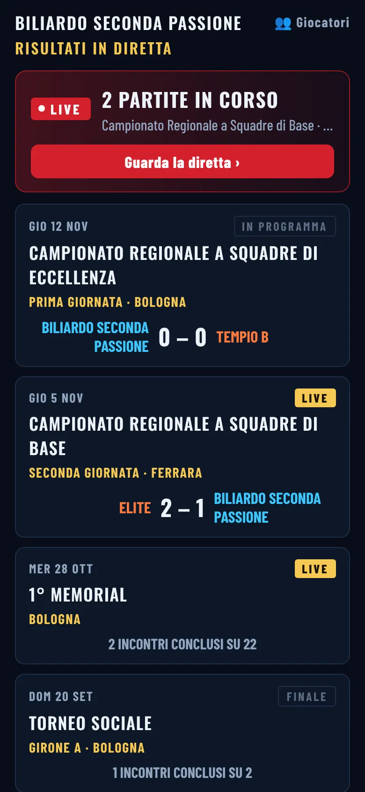
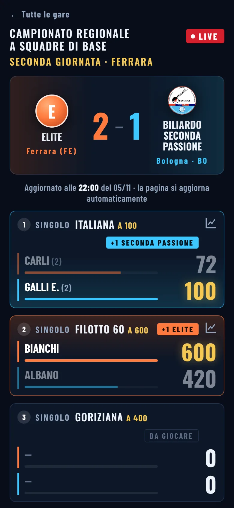
Pagina di una gara a squadre
- Sotto il titolo giorno e ora di inizio. Finché la gara è in programma la riga è in evidenza (“Inizio: giovedì 12 novembre · ore 20:30”): chi apre il link della diretta prima dell'inizio sa già quando si comincia. Vale anche per i tornei e le partite singole.
- In alto le due squadre con il punteggio totale. A sinistra c'è sempre la squadra che gioca in casa; i colori restano legati alla squadra: azzurro per il nostro circolo, arancione per l'avversario.
- Sotto una scheda per incontro: tipo (Singolo, Coppia, Staffetta), specialità e punti da raggiungere, giocatori con la categoria tra parentesi, per esempio “GALLI E. (2)”, e punteggio. L'incontro in corso è evidenziato; quello vinto mostra il punto assegnato alla squadra.
- Staffetta: si vede la frazione in corso, a quanti punti avviene il cambio e quanto vale l'incontro.
- 📈 Andamento: l'icona sull'incontro apre il grafico del punteggio nel tempo e, per gli incontri a più set, i parziali dei set.
- Nomi: toccando il nome di un giocatore riconosciuto si apre la sua scheda.
La pagina si aggiorna da sola: quando la regia pubblica, i punteggi cambiano con una piccola animazione (“+12”). Sotto il punteggio c'è l'ora dell'ultimo aggiornamento e, durante la diretta, in alto compare quante persone stanno guardando. Se la connessione si interrompe compare un avviso e la pagina si ricollega da sola.
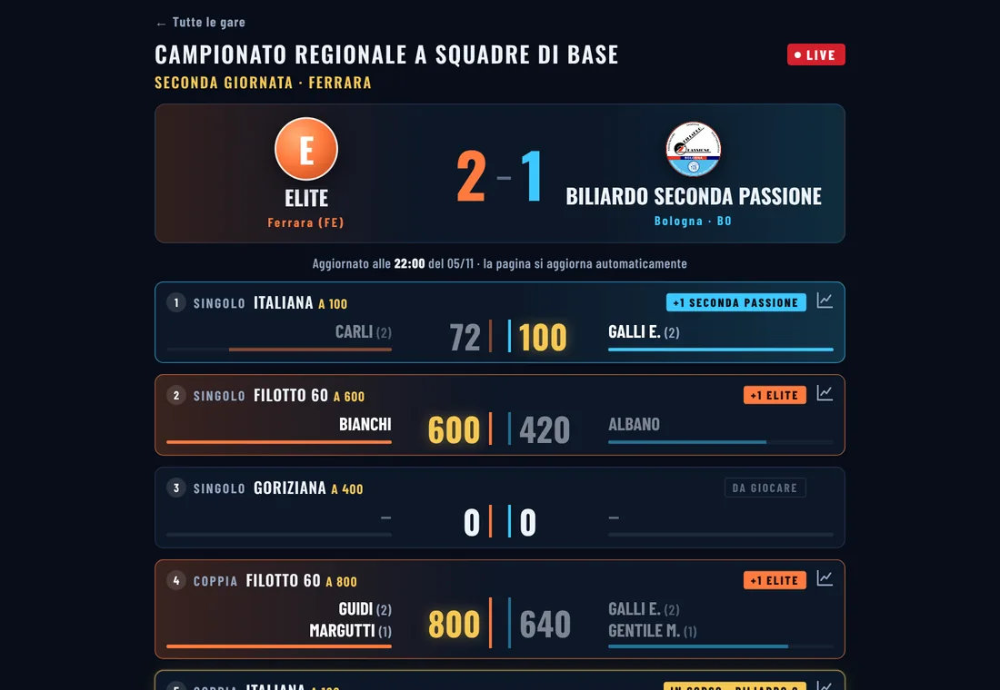
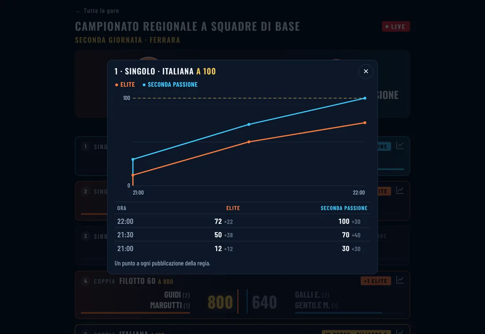
Pagina di un torneo
Per i tornei con batterie e finali la pagina mostra gli incontri seguiti in diretta e il tabellone, diviso in pagine (una per batteria, più le finali): si scorre con i pulsanti in alto. Ogni incontro del tabellone indica chi è passato e l'eventuale punteggio; quelli in diretta hanno il pallino rosso. A torneo concluso compare il vincitore con la coppa.
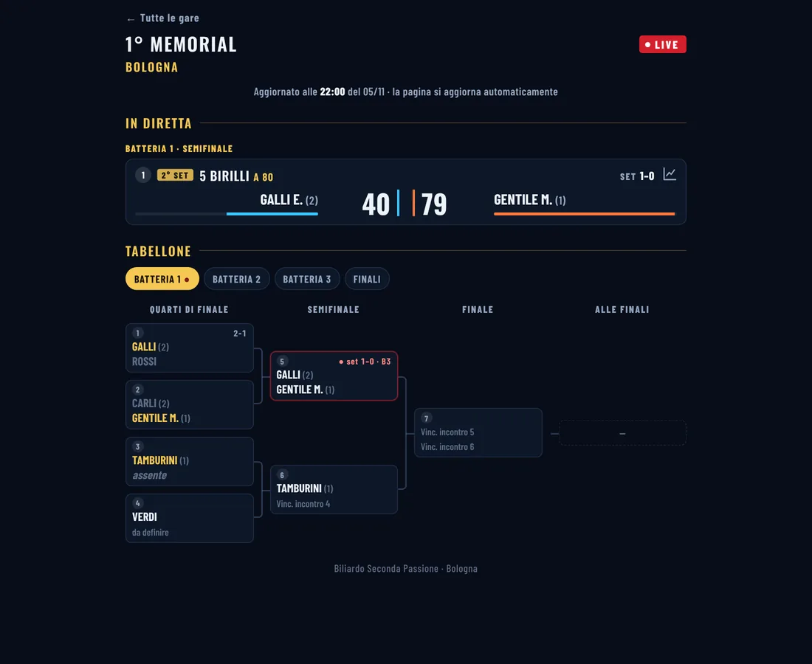
Giocatori
L'elenco è diviso per anno sportivo e per squadra, con una casella di ricerca. Ogni scheda mostra squadra e categoria, la foto (se c'è), i totali (partite giocate, vinte, perse, percentuale di vittorie), una tabella per tipo e specialità e la cronologia delle partite con il link alla gara. Vedi Statistiche dei giocatori.
3La regia: accesso
Apri biliardo2p.github.io/?regia e accedi con email e password dell'utente di regia. L'accesso resta memorizzato su quel dispositivo finché non premi Esci.
La schermata principale della regia contiene:
- il modulo Nuova gara;
- l'elenco di tutte le gare, ognuna con i pulsanti ⧉ Duplica e 🗑 Elimina;
- in alto, 👥 Giocatori, circoli e squadre per l'anagrafica.
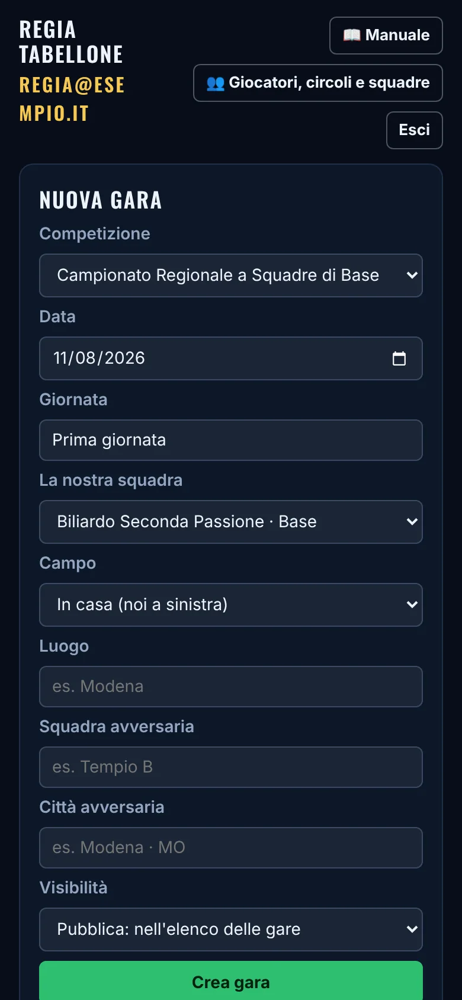
Toccando una gara si apre la sua pagina in modalità regia: è la stessa pagina che vede il pubblico, con in più le caselle modificabili e la barra di regia verde in fondo.
4Creare una gara
Nel modulo Nuova gara scegli la competizione; i campi cambiano a seconda del tipo.
Campionato a squadre (Base o Eccellenza)
| Campo | Cosa scrivere |
|---|---|
| Data | Il giorno della gara. |
| Ora di inizio | Facoltativa (c'è anche per tornei e partite singole). Compare sotto il titolo nella pagina della gara e, per le gare in programma, nell'elenco. |
| Giornata | Per esempio “Seconda giornata”. |
| La nostra squadra | Compare solo se il circolo ha più di una squadra: viene proposta quella del campionato scelto (Base o Eccellenza). Sul tabellone va il nome della squadra. |
| Campo | In casa (noi a sinistra) oppure In trasferta (avversari a sinistra). |
| Luogo | Dove si gioca. |
| Squadra avversaria | Mentre scrivi compaiono le squadre dell'anagrafica (prima quelle del campionato scelto): scegliendone una, città e logo si compilano da soli. Il logo è quello della squadra o, se non ne ha uno, quello del suo circolo. |
| Città avversaria | Si compila da sola con la città del circolo della squadra; altrimenti scrivila. |
Gli incontri sono già impostati secondo il regolamento:
| Base | Eccellenza |
|---|---|
| 1. Singolo · Italiana a 100 2. Singolo · Filotto 60 a 600 3. Singolo · Goriziana a 400 4. Coppia · Filotto 60 a 800 5. Coppia · Italiana a 120 6. Staffetta (3 frazioni) · Italiana a 180, cambio ogni 60, vale 2 punti |
1. Singolo · Filotto 60 a 600 2. Singolo · 5 Birilli a 120 3. Singolo · Goriziana a 500 4. Coppia · specialità all'acchito (5 Birilli a 130, Goriziana a 500, Filotto 60 a 800) 5. Staffetta (5 frazioni) · 5 Birilli a 250, cambio ogni 50 |
Tornei
Per i due tipi di torneo si indicano nome del torneo, fase o giornata (facoltativa), gioco (singoli o coppie) e la partita: set secco, 2 su 3 o 3 su 5; per ogni set specialità e punti. L'ultimo set può essere a scelta all'acchito. Per il torneo con batterie e finali si indica anche il numero di batterie. Vedi Tornei.
Duplica
⧉ Duplica riempie il modulo con i dati di una gara esistente: competizione, giornata successiva (Prima → Seconda, 1ª → 2ª, Giornata 3 → Giornata 4), ora di inizio, campo, luogo, avversario e città; per i tornei nome, gioco, formula e numero di batterie. La data diventa quella di oggi. Punteggi e nomi dei giocatori non vengono copiati. Controlla i campi, in particolare data e campo, e premi Crea gara.
Partite singole
Per seguire solo uno o pochi incontri di un torneo, anche organizzato da altri, senza compilare il tabellone: scegli Partite singole. Si indicano evento (es. “Gran Premio di Modena”), fase facoltativa, singoli o coppie, la partita e, se vuoi, i nomi del primo incontro: con Crea gara sei subito in diretta. Altri incontri si aggiungono dopo con Incontri…, come nei tornei a incontri liberi. Sito, overlay, numero del biliardo e andamento funzionano come per le altre gare.
Le partite singole nascono con visibilità Solo con il link. A fine diretta, Termina gara ricorda che la gara resta raggiungibile con il suo link; se non serve conservarla, 🗑 Elimina gara (nella barra di regia, sotto ⋯ su telefono) la cancella con doppia conferma. Eliminandola il link smette di funzionare.
Visibilità
| Visibilità | Elenco pubblico | Link della gara | Link fisso ?live e overlay | Statistiche |
|---|---|---|---|---|
| Pubblica | sì | sì | sì | sì |
| Solo con il link | no | sì | sì, quando è in diretta | sì |
| Prova | no | sì | no (overlay solo con ?overlay&live&prova) | no |
Si sceglie nel modulo Nuova gara e si cambia dalla barra di regia (Visibilità: …, poi PUBBLICA). Nella regia le gare non pubbliche hanno l'etichetta SOLO LINK o PROVA. Con Statistiche: incluse/escluse si può anche togliere una singola gara dalle statistiche dei giocatori.
La gara nuova nasce In programma: compare nell'elenco pubblico ma senza punteggi finché non la pubblichi.
5Gara a squadre: la diretta
Inserire i giocatori
Tocca la casella del nome: compare un riquadro con i giocatori della squadra di quel lato (i nostri dalla nostra parte, quelli dell'avversario dall'altra): prima quelli indicati nella squadra, poi gli altri del suo circolo. Scrivendo qualche lettera l'elenco si restringe, cercando in tutta l'anagrafica.
- Scegliere: tocca il nome, oppure usa ↓ ↑ e Invio.
- Scrivere a mano: premi Invio senza scegliere nulla e resta il testo scritto. Se corrisponde a un solo giocatore (“Galli”, “Galli E.”, “Galli Enrico”, il soprannome) viene collegato in automatico.
- Nome non riconosciuto: resta sottolineato a tratteggio arancione (lo vede solo la regia). In fondo al riquadro c'è + Aggiungi … all'elenco giocatori: si apre la scheda già compilata e, salvando, la casella si collega al nuovo giocatore.
- Sostituire un giocatore: riscrivi la casella o scegli un altro nome; il collegamento segue sempre il nome scritto.
Accanto al nome compare la categoria dell'anno sportivo della gara, per esempio “(M)”, “(1)”.
Inserire i punti
Tocca il punteggio di un giocatore: compare un piccolo tastierino con tre modalità.
| Modalità | Cosa fa | Da tastiera |
|---|---|---|
| + Aggiungi (normale) | Scrivi i punti del tiro e premi Invio: si sommano al totale. | 12 Invio |
| − Togli | Toglie punti, per correggere un errore. | -2 Invio |
| = Totale | Imposta direttamente il punteggio totale. | =150 Invio |
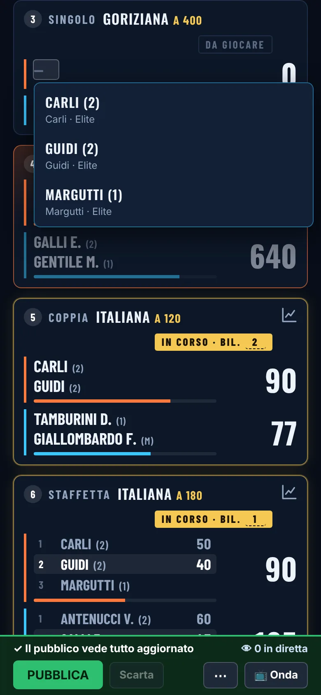
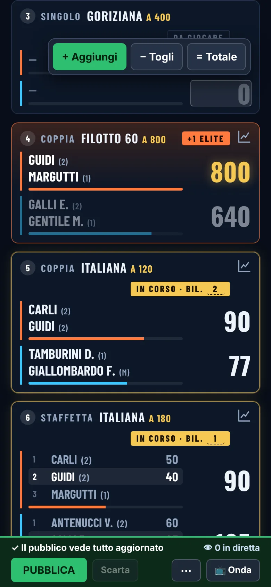
Nella staffetta ogni frazione ha i suoi punti: si inseriscono nella casella accanto al nome di chi sta tirando, e il totale si calcola da solo. Negli incontri a più set c'è una casella per ogni set.
Altri comandi
- Incontro in corso: tocca il numero dell'incontro, oppure premi il tasto con il suo numero (1–6); 0 toglie tutti gli “in corso”. Si giocano due incontri alla volta: si possono segnare entrambi. Accanto a “In corso” c'è la casella Bil.: scrivi il numero del biliardo su cui si gioca (numerazione libera: 1, 2, 7…). Compare sul sito (“In corso · Biliardo 2”) e nell'overlay; si può lasciare vuota.
- Specialità all'acchito (Coppia dell'Eccellenza, set “a scelta”): tocca la specialità per scorrere le possibilità.
- Casa / trasferta: il pulsante sotto il punteggio (“In casa · ⇄ cambia”) inverte i lati.
- Logo dell'avversario: doppio clic sul logo o sull'iniziale per caricare un'immagine; viene salvato anche nella scheda della squadra.
- Nomi e città delle squadre, titolo e sottotitolo: si correggono toccandoli.
- Data e ora di inizio: le due caselle sotto il titolo; valgono per il pubblico dopo PUBBLICA. Il codice della gara (nel link) non cambia.
- Annulla: Ctrl+Z.
6Pubblicare e stati della gara
Tutto quello che modifichi in regia resta privato finché non premi PUBBLICA (o il tasto P). La barra in fondo lo indica: “● Modifiche NON ancora pubblicate” oppure “✓ Il pubblico vede tutto aggiornato”. Le modifiche non pubblicate restano salvate sul dispositivo anche se chiudi la pagina.
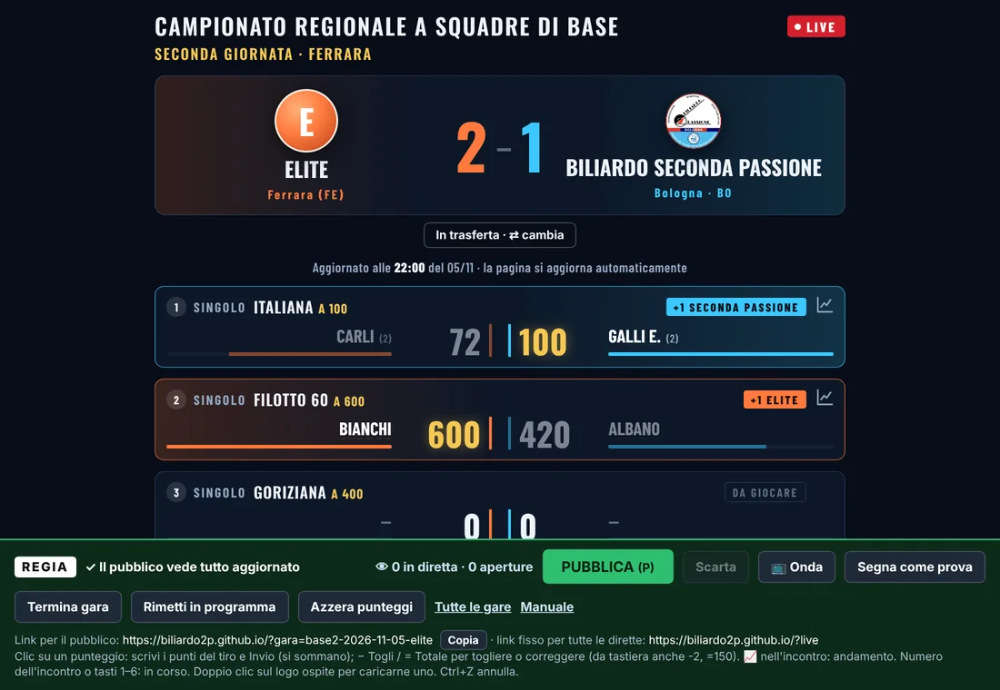
Il ritmo consigliato è: inserisci i punti di un tiro, controlla, premi P. Ogni pubblicazione aggiunge un punto al grafico dell'andamento.
| Comando | Effetto |
|---|---|
| PUBBLICA | Il pubblico vede la situazione attuale. Alla prima pubblicazione la gara passa da In programma a LIVE. |
| Scarta | Torna all'ultima versione pubblicata, buttando le modifiche non pubblicate. |
| Termina gara | La gara diventa Finale e viene pubblicata. Lo stesso pulsante diventa Riapri gara. |
| Rimetti in programma | Solo per una gara LIVE: azzera punteggi e cronologia e la riporta a In programma (per esempio se è partita per errore). Chiede conferma. |
| Visibilità: … | Pubblica → Solo con il link → Prova (poi PUBBLICA). Vedi sezione 4. |
| Statistiche: … | Include o esclude gli incontri di questa gara dalle statistiche dei giocatori. |
| 🗑 Elimina gara | Solo partite singole: elimina la gara con doppia conferma. |
| Azzera punteggi | Mette a zero tutti i punteggi, lasciando i nomi. Chiede conferma. |
| Copia | Copia il link pubblico di questa gara. |
| Tutte le gare | Torna alla schermata principale della regia. |
Su telefono i comandi meno usati sono sotto il pulsante ⋯.
7Tornei
Ci sono due tipi di torneo:
- Torneo a incontri liberi: un elenco di incontri divisi per turno, senza tabellone. Adatto a gironi o a tornei piccoli.
- Torneo con batterie e finali: batterie da 8 giocatori (o coppie) con tre turni, poi le finali, con eventuali partite dell'acqua. Vedi la sezione successiva.
La formula della partita
Si sceglie set secco, 2 su 3 o 3 su 5; per ogni set la specialità (5 Birilli, Goriziana, Filotto 60, oppure “Altro…” con un nome libero) e i punti. L'ultimo set può essere a scelta all'acchito: in diretta si tocca la specialità per indicare quella scelta. Si possono aggiungere altre formule con un nome (per esempio “Finale” a 3 set) e usarle solo in alcuni incontri.
Finestra “Incontri…”
Nel torneo a incontri liberi, dalla barra di regia Incontri… apre un testo dove si scrive tutto il torneo:
# Quarti di finale Galli - Rossi Tamburini - Bianchi # Semifinale ? - ? # Finale ? - ? | Finale
# Nome del turnoapre un turno; poi un incontro per riga.- Coppie:
Galli / Tamburini - Rossi / Bianchi. ?= giocatore ancora da decidere.| Finalein fondo alla riga usa la formula chiamata “Finale”.- I punteggi già inseriti restano se l'incontro rimane nello stesso turno e nella stessa posizione. Se una modifica farebbe sparire dei punteggi, la finestra avvisa e chiede conferma.
8Torneo con batterie e finali
Batterie e finali
Dalla barra di regia Batterie e finali… si scrivono gli iscritti:
# Batteria 1 · mercoledì 28/10 ore 19:00 Galli Rossi Tamburini assente …
- Gli 8 iscritti vanno nell'ordine del sorteggio: 1° contro 2°, 3° contro 4°, 5° contro 6°, 7° contro 8°.
assente= avversario non presente: l'altro passa il turno (non conta nelle statistiche).?o riga mancante = ancora da definire.- Coppie:
Galli / Tamburini.
Le finali si scrivono con riferimenti: B3 = vincitore della 3ª batteria, A1 = vincitore della 1ª partita dell'acqua. Sotto # Partite dell'acqua (se servono) e # Tabellone finale va un incontro per riga, nell'ordine del sorteggio; i turni successivi si formano da soli. Rigenera l'ordine proposto ricalcola uno schema standard in base al numero di batterie (per esempio con 12 batterie: 4 partite dell'acqua e 4 vincitori di batteria già nei quarti).
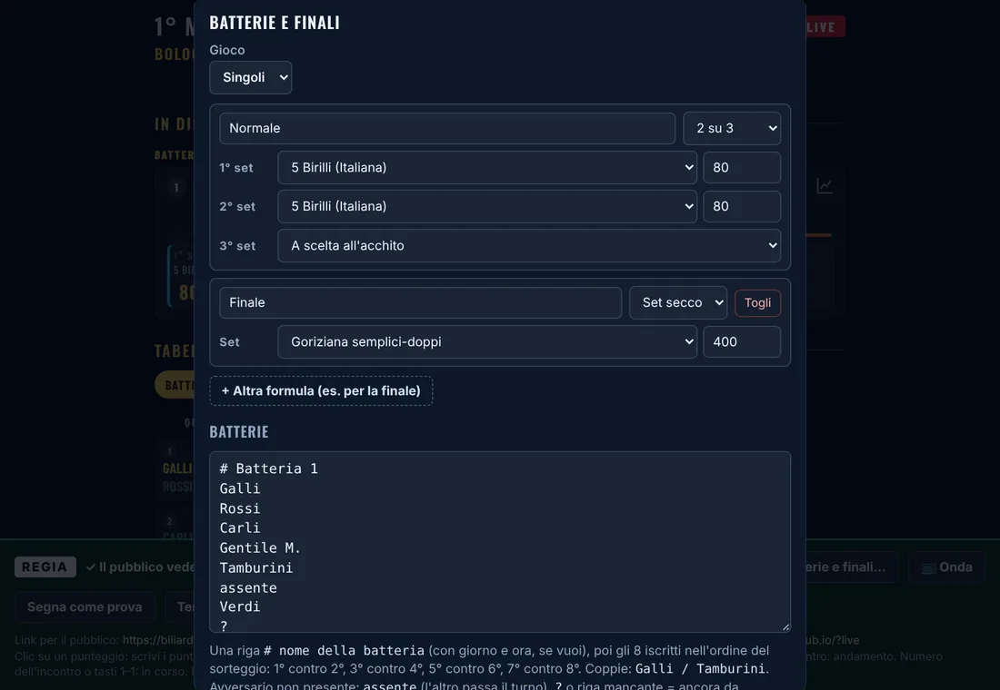
Segnare i risultati
Tocca un incontro nel tabellone. Nella finestra puoi:
- indicare il vincitore e, se vuoi, un punteggio libero (“120–95”, “2–1”), poi Salva: il vincitore passa al turno successivo;
- ▶ Segui in diretta scegliendo la formula: l'incontro diventa una scheda con i punteggi come nelle gare a squadre, e il vincitore avanza da solo quando l'incontro finisce. Smetti di seguire lo toglie dalla diretta.
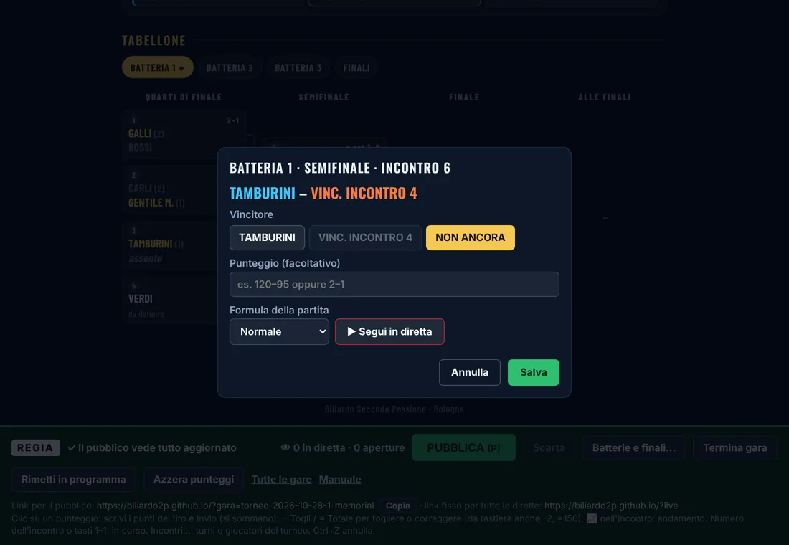
Nella pagina pubblica gli incontri in diretta stanno in cima; quelli conclusi si raccolgono sotto “Incontri seguiti e conclusi”.
9Giocatori, circoli e squadre
Dalla regia, 👥 Giocatori, circoli e squadre apre l'anagrafica, con cinque schede: Giocatori, Circoli, Squadre, Importa / esporta, Controllo nomi.
Circolo e squadra: la differenza
- Il circolo (CSB) è quello a cui il giocatore appartiene: nelle gare singole e a coppie rappresenta il suo circolo. Ogni giocatore ha un circolo per ogni anno sportivo.
- Le squadre giocano i campionati a squadre (Base, Eccellenza) e rappresentano il loro circolo. Un circolo può averne più d'una, e una squadra può avere un nome che non c'entra con il circolo, per esempio quello dello sponsor: “Minerva 2000” è una squadra del circolo Time Out di Cesena. Sul tabellone dei campionati compare il nome della squadra.
- Un giocatore può stare in più squadre nella stessa stagione (per esempio Base ed Eccellenza) oppure in nessuna, e anche in una squadra di un circolo diverso dal suo: per esempio un giocatore iscritto a un circolo toscano, dove fa il campionato individuale e la Base, può giocare l'Eccellenza con la nostra squadra. Nelle gare singole e a coppie resta del suo circolo. Indicare le squadre serve ai suggerimenti dei nomi nelle gare.
Anno sportivo e categorie
L'anno sportivo va da settembre ad agosto e si indica con l'anno di inizio: 2026 = 2026/27. Per ogni anno un giocatore ha un circolo, una categoria e, se le gioca, una o più squadre. Categorie: NP (Nazionale Pro), N (Nazionale), M (Master), 1, 2, 3. Sul tabellone compare la sigla tra parentesi, per esempio “GALLI E. (2)” o “ROSSI M. (NP)”; negli elenchi e nelle pagine dei giocatori per esteso: “2ª cat.”, “cat. Master”, “cat. Nazionale”, “cat. Nazionale Pro”. Ogni partita usa la categoria dell'anno sportivo in cui è stata giocata, quindi un cambio di categoria non altera le gare passate.
Scheda del giocatore
- Cognome e nome: il nome sul tabellone si compone da solo, “Galli E.”. Il nome può restare vuoto: sul tabellone comparirà solo il cognome.
- Soprannome (facoltativo), riconosciuto anche quando lo si scrive in una gara.
- Nome sul tabellone: da scrivere solo per distinguere due omonimi con la stessa iniziale. La scheda avvisa quando due giocatori risulterebbero uguali.
- Foto (facoltativa): Carica foto sceglie un'immagine dal telefono o dal computer; viene rimpicciolita da sola a 400 pixel prima di salvarla, quindi va bene anche l'originale grande. Compare nella pagina pubblica del giocatore. Cambia foto la sostituisce, Togli foto la elimina; la modifica vale dopo Salva. Nell'elenco i giocatori con la foto hanno il simbolo 📷. Invece di caricare un file si può incollare un'immagine copiata: da un sito, tasto destro sull'immagine → “Copia immagine”, poi nella scheda Ctrl+V o 📋 Incolla.
- Circolo, categoria e squadre per anno sportivo: sotto il circolo compaiono le sue squadre da spuntare. + Aggiungi anno copia l'ultima riga, così basta cambiare ciò che è diverso.
- Circolo che non c'è ancora: nella tendina Circolo scegli + Nuovo circolo… e scrivi nome e città: il circolo viene creato insieme al giocatore, quando premi Salva (se esiste già un circolo con quel nome, si usa quello). Il logo si aggiunge poi dalla scheda Circoli.
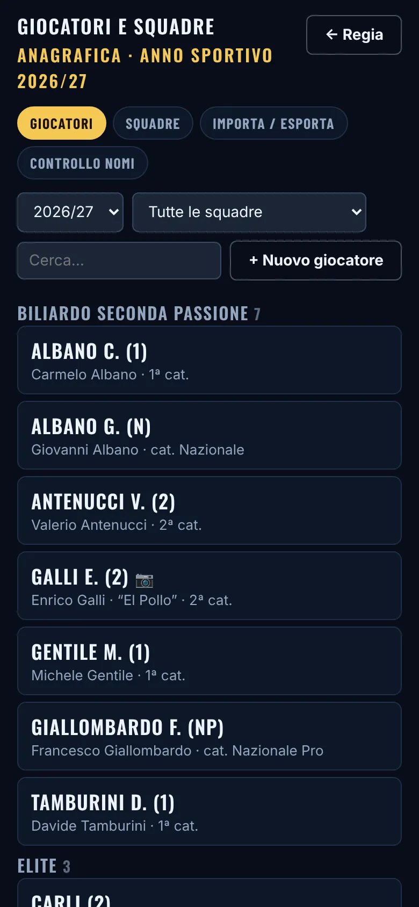
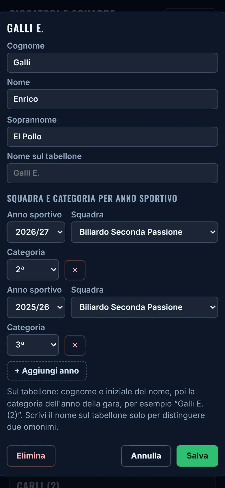
Ogni giocatore ha un codice interno, creato alla prima registrazione e mai più modificato. Le gare sono collegate al codice: se cambi nome, grafia o soprannome, tutte le gare e le statistiche mostrano il nome aggiornato.
Circoli
Nome, città e logo. Il logo si carica da file oppure si incolla, come la foto dei giocatori: tasto destro sull'immagine del sito → “Copia immagine”, poi Ctrl+V o 📋 Incolla. Alcuni siti copiano solo l'indirizzo dell'immagine e non permettono di scaricarla: in quel caso la scheda lo dice, e l'immagine va salvata e caricata con Carica logo. Il logo vale anche per le squadre del circolo che non ne hanno uno proprio. Un circolo con giocatori o squadre non si può eliminare.
Squadre
In alto la tendina dei campionati mostra solo le squadre di Base, solo quelle di Eccellenza o quelle a cui manca il campionato. Ogni squadra ha nome, campionato (Base o Eccellenza), circolo che rappresenta, logo facoltativo e i giocatori della squadra nell'anno sportivo scelto in alto: si spuntano tra quelli del circolo, e con la tendina + giocatore di un altro circolo… si aggiungono quelli iscritti altrove (compaiono con il loro circolo accanto). Lo stesso si fa dalla scheda del giocatore, con + squadra di un altro circolo…. Per togliere un giocatore da una squadra basta togliere la spunta (nell'una o nell'altra scheda) e premere Salva. Il campionato serve a proporre la squadra giusta in Nuova gara; due squadre possono avere lo stesso nome solo se giocano campionati diversi. Eliminando una squadra si tolgono anche le iscrizioni dei giocatori; le gare già giocate non cambiano.
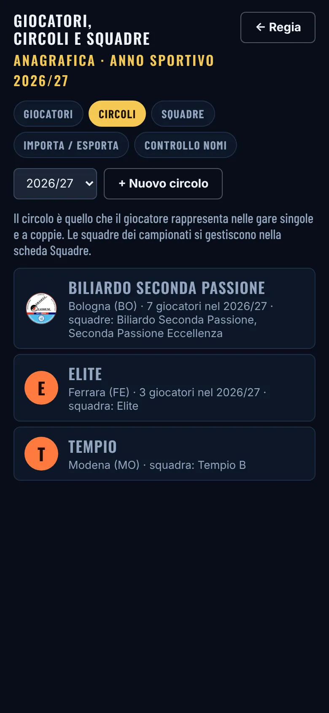
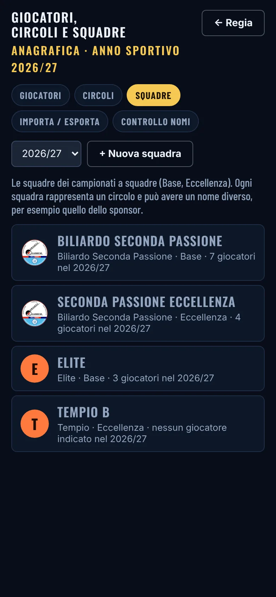
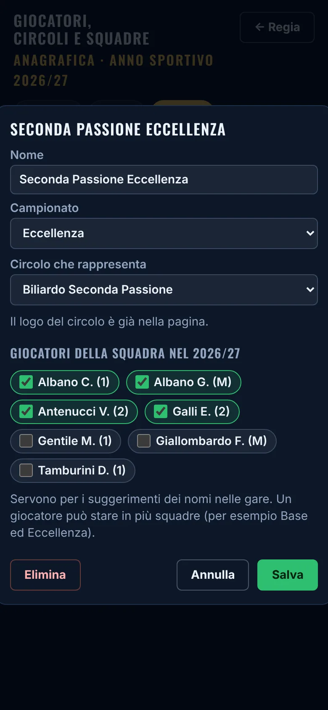
Il passaggio a circoli e squadre (8 novembre 2026)
La prima volta che si apre l'anagrafica dopo l'aggiornamento compare il pulsante Separa circoli e squadre: ogni squadra di prima diventa anche un circolo con lo stesso nome, città e logo, e la squadra di ogni giocatore diventa il suo circolo. Le gare non cambiano. Dopo si sistemano a mano i casi come Minerva 2000 (squadra da rinominare o da aggiungere al circolo giusto), si indica il campionato di ogni squadra e si aggiunge la seconda squadra del nostro circolo.
Importa / esporta
Per caricare molti giocatori insieme, copia le righe da Excel (con l'intestazione) e incollale nel riquadro Importa da tabella:
| Nome | Cognome | Circolo | Città | Categoria | Anno | Squadre |
|---|---|---|---|---|---|---|
| Enrico | Galli | Biliardo Seconda Passione | Bologna (BO) | 2 | 2026 | Seconda Passione Eccellenza |
| Carli | Elite | Ferrara (FE) | 2 | 2026 |
- Obbligatori: cognome, circolo, anno. Città = città del circolo. Squadre (facoltativa): una o più, separate da virgola; se la cella è vuota le squadre già indicate per quell'anno restano. Le tabelle vecchie con la colonna Squadra al posto di Circolo vanno ancora bene: la squadra vale come circolo.
- Categoria: NP (o Nazionale Pro), N (o Nazionale), M (o Master), 1, 2, 3; si può lasciare vuota.
- Con l'intestazione le colonne possono essere in qualsiasi ordine. Vanno bene anche testi separati da
;o,. - Prima di importare compare un'anteprima riga per riga: nuovo giocatore, anno aggiunto, aggiornamento, già presente. I circoli e le squadre mancanti vengono creati.
- Reincollare la stessa tabella non crea doppioni. A ogni nuova stagione basta incollare le righe del nuovo anno.
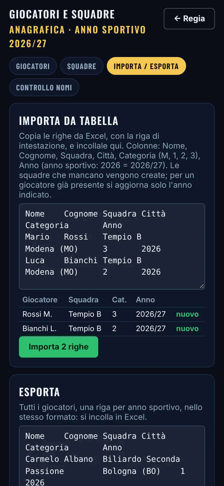
Esporta restituisce tutta l'anagrafica nello stesso formato, una riga per giocatore e per anno, pronta da incollare in Excel.
10Controllo nomi
Serve a collegare all'anagrafica i nomi scritti nelle gare: quelle giocate prima dell'anagrafica e quelle con nomi scritti a mano. La scheda legge tutte le gare e mostra quattro contatori: collegati, riconosciuti da confermare, riconosciuti nei tornei, da sistemare.
- ⬇ Copia di sicurezza: scarica un file con gare, giocatori, circoli, squadre e foto. Fallo prima di cominciare.
- Riconosciuti automaticamente: nomi delle gare a squadre che corrispondono a un solo giocatore. Controlla l'elenco e premi Conferma tutti.
- Da sistemare: un riquadro per ogni nome, con le gare in cui compare. La tendina propone prima i giocatori con nome uguale o simile (anche con refusi), poi quelli della squadra, poi tutti. Scegli e premi Collega: vale per tutte le caselle del gruppo. + Nuovo giocatore crea il giocatore e collega subito il gruppo.
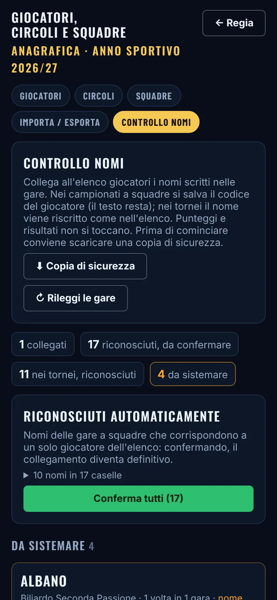
- Nelle gare a squadre si salva solo il collegamento: il testo scritto resta com'era.
- Nei tornei il nome viene riscritto come in anagrafica (per esempio “Antenuci” diventa “Antenucci V.”).
- Punteggi e risultati non vengono mai toccati.
11Statistiche dei giocatori
Le statistiche non sono salvate a parte: si ricalcolano dalle gare ogni volta che si apre una scheda. Correggere un punteggio o collegare un nome aggiorna subito le statistiche.
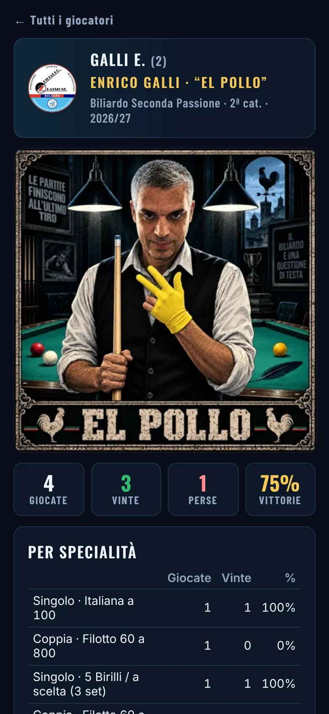
| Situazione | Come conta |
|---|---|
| Incontro di una gara a squadre | Vinta o persa, con il punteggio. In coppia compare il compagno. |
| Staffetta | La frazione e i punti del giocatore; l'esito è quello della squadra. |
| Incontro di torneo seguito in diretta | Vinta o persa, con il punteggio o i set. |
| Incontro del tabellone segnato a mano | Vinta o persa, con il punteggio se è stato scritto. |
| Vittoria a tavolino (avversario assente) | Non conta. |
| Incontro con punti ma senza vincitore | Compare come “In corso” e non entra nei totali. |
| Incontro senza punti | Non compare. |
Contano solo i nomi riconosciuti, cioè collegati a un giocatore dell'anagrafica. Se un giocatore ha giocato in più stagioni, nella scheda compaiono i pulsanti per filtrare per anno sportivo. Non contano le gare di prova e quelle escluse dalla regia (“Statistiche: escluse”).
12Dirette video (OBS)
Per le dirette video la grafica (punteggi, tabellone, fascia dell'incontro) è una vista dello stesso sito: i punti si inseriscono una sola volta dalla regia e vanno sia sul sito sia in diretta. Non serve più collegare la regia a OBS.
Preparare OBS (una volta sola)
- In OBS aggiungi una sorgente Browser sopra la telecamera.
- Indirizzo (URL):
https://biliardo2p.github.io/?overlay&live— segue da solo la gara in diretta. Per una gara precisa:?overlay&gara=…(il link si copia dal pannello Onda). - Larghezza 1280, altezza 720 (con una scena 1920×1080 si può ingrandire la sorgente a tutto schermo: la grafica resta nitida).
- Lascia il CSS personalizzato di OBS com'è (sfondo trasparente).
Serve la connessione a internet nel PC con OBS, come per trasmettere.
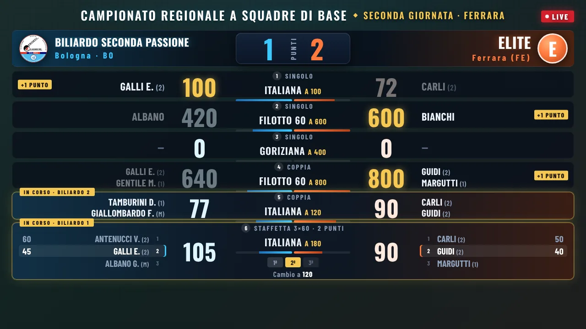
Cosa si vede
- Gare a squadre: squadre e punti in alto, tutti gli incontri con giocatori, categorie, punteggi e barre di avanzamento; gli incontri in corso sono evidenziati con il numero del biliardo; la staffetta mostra frazioni e cambio. A sinistra c'è sempre la squadra di casa, come sul sito.
- Torneo con batterie e finali: il tabellone a grafo, una pagina per batteria più le finali, con gli incontri in diretta evidenziati.
- Torneo a incontri liberi: gli incontri del turno in corso.
- Fascia dell'incontro: una fascia in basso con l'incontro in primo piano, lasciando libera l'immagine del tavolo.
In basso resta sempre libera una fascia di 100 pixel per eventuali altre grafiche.
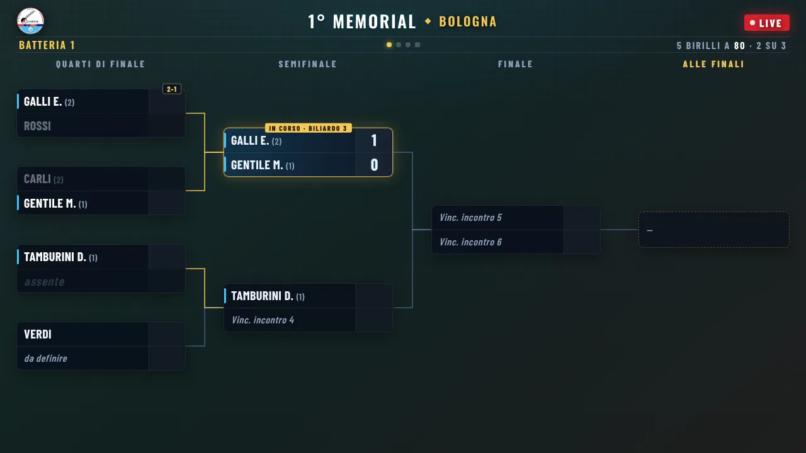
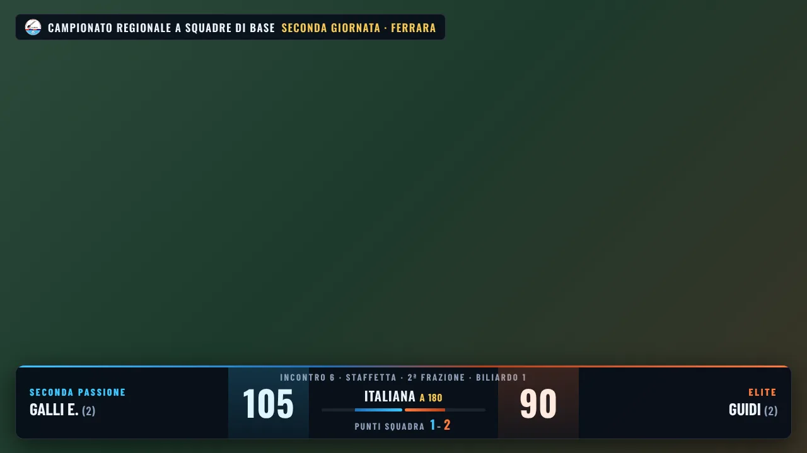
Comandi dalla regia: pannello 📺 Onda
Nella barra di regia, 📺 Onda apre il pannello dei comandi dell'overlay. Questi comandi vanno in onda subito, senza PUBBLICA (risultati e nomi invece con PUBBLICA, come sempre). Il sito pubblico non ne è toccato.
| Comando | Tasto | Effetto |
|---|---|---|
| In onda: Tabellone / Fascia incontro / Nascosto | V · N | V passa da tabellone a fascia; N nasconde e rimostra l'overlay. |
| Incontro in primo piano | F | Quale incontro va nella fascia. Automatico = quello in corso; se sono più d'uno, l'ultimo messo in corso. Scegliendone uno resta fisso; F passa al successivo tra quelli in corso (è il modo per mostrare gli altri biliardi). |
| Pagina del tabellone | Solo tornei con batterie: pagina fissa, automatica, oppure rotazione ogni 10–30 secondi. | |
| Sfondo del tabellone | [ ] | Più pieno o più trasparente. |
| 📷 Telefono con B2P Camera | Comandi per il telefono che trasmette con l'app B2P Camera: microfono, immagine, overlay, zoom, fuoco, cambio fotocamera (vedi più sotto). |
Il pannello mostra anche gli indirizzi da incollare in OBS, con il pulsante Copia.
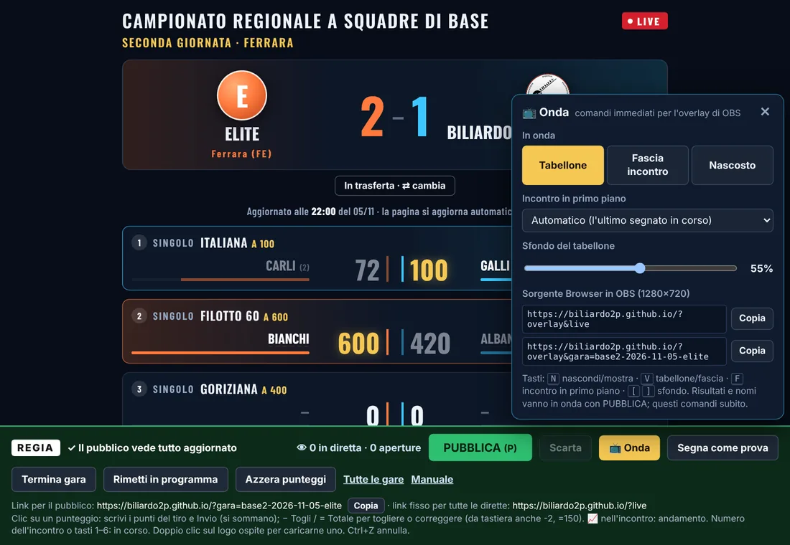
Diretta improvvisata con telecamera: il mini-overlay
Per una diretta senza il PC della sala (un PC qualsiasi con webcam, oppure il telefono usato come telecamera) c'è una versione ridotta dell'overlay: solo la fascia in basso, con sfondo trasparente, che lascia vedere il tavolo. Indirizzo:
https://biliardo2p.github.io/?overlay&mini&live
- Mostra l'incontro in corso con giocatori, categoria, punteggi, specialità, numero del biliardo e (nelle gare a squadre) i punti delle squadre. La squadra di appartenenza dei giocatori compare solo nei campionati a squadre. In alto a sinistra il nome della gara con il bollino LIVE.
- Con due o più incontri in corso mostra l'ultimo messo in corso; per passare a un altro biliardo si usa F (o il menu “Incontro in primo piano”) nel pannello 📺 Onda, per vederli tutti V (riepilogo). Chi vuole la rotazione automatica aggiunge
&rotall'indirizzo (ogni 12 secondi;&rot=20per 20 secondi): i pallini sotto indicano quale si sta vedendo. - Nelle gare a squadre, quando nessun incontro è in corso, mostra squadre e punti con il prossimo incontro.
- Con PRISM Live Studio sul telefono: modalità Camera, poi Widget → Web con l'indirizzo del mini-overlay (per le prove
&provain fondo), riquadro a tutto schermo e livello bloccato. Lo sfondo è trasparente. La fascia si adatta da sola alla forma del riquadro: occupa sempre tutta la larghezza e sta in basso; il riquadro si può anche disegnare come una striscia bassa sul fondo (in quel caso il titolo della gara in alto non compare). Lo zoom del widget va lasciato a 100%. Con la versione gratuita di PRISM il logo “PRISM Live” in basso a destra non si può togliere: aggiungendo&alzaall'indirizzo la fascia si solleva e lo lascia libero sotto (&alza=20per sollevarla di più). Per ricaricare il widget dopo un aggiornamento del sito si aggiunge in fondo all'indirizzo&r=2, poi&r=3e così via. - Dal pannello 📺 Onda: “Incontro in primo piano” lo blocca su un incontro, “Nascosto” lo toglie. Con “Tabellone” la fascia sparisce e al suo posto compare il riepilogo (vedi sotto).
Riepilogo della gara a tutto schermo. Per mostrare ogni tanto il quadro completo della gara (tutti gli incontri e i punti delle squadre, oppure gli incontri del torneo) si aggiunge in PRISM un secondo widget Web, a tutto schermo, con l'indirizzo
https://biliardo2p.github.io/?overlay&riepilogo&live (per le prove &prova in fondo)
- Di norma è vuoto e trasparente: si vede la telecamera con la fascia.
- Dal pannello 📺 Onda della regia, V (o “Tabellone”) manda in onda il riepilogo e nasconde la fascia; un altro V (o “Fascia incontro”) torna alla fascia. N nasconde tutto.
- Il riepilogo resta 16:9 e centrato qualunque sia la forma del widget; lo sfondo semitrasparente si regola con [ ] o con “Sfondo del tabellone”.
- I due widget sono indipendenti: si possono posizionare come si vuole (ad esempio la fascia in alto e il riepilogo a tutto schermo).
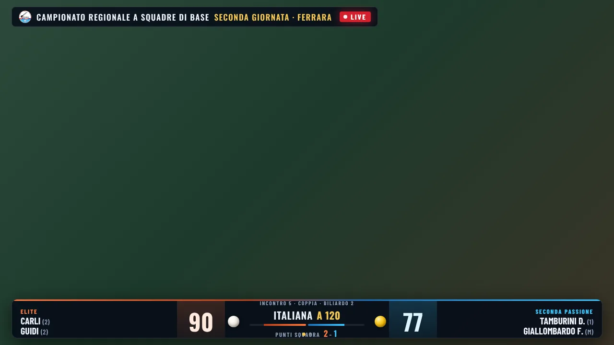
&rot)Diretta dal telefono con l'app B2P Camera
B2P Camera è l'app Android del circolo per trasmettere dalla fotocamera del telefono a YouTube o Facebook, senza pubblicità né watermark (si installa a mano; istruzioni e codice nella cartella App B2P Camera). Fa in un'app sola quello che con PRISM richiedeva due widget:
- 🏷 Overlay mette sopra il video la fascia (
?overlay&mini&live) e il riepilogo (?overlay&riepilogo&live), già impostati in ⚙. Il tasto V del pannello 📺 Onda li alterna come in PRISM. In ⚙ la spunta “Segui le gare di prova” aggiunge&provae salvando la pagina si ricarica (niente più&r=N). - Sul telefono: microfono e immagine accesi/spenti (spenta = in diretta va il nero, l'audio continua), zoom, fuoco automatico (tocca l'immagine) o manuale, cambio fotocamera.
Telefono comandato dalla regia. Nel pannello 📺 Onda c'è la sezione 📷 Telefono con B2P Camera: microfono, immagine/nero, overlay, zoom, fuoco automatico o manuale e cambio fotocamera. Il telefono riceve il comando in 1–2 secondi, da qualunque rete (anche con i dati mobili); in alto a sinistra sullo schermo del telefono compare “📡 Regia collegata” e l'ultimo comando ricevuto.
- Il pannello mostra gli ultimi comandi inviati, non lo stato del telefono: se sul telefono si preme un pulsante, quello vale finché dalla regia non si cambia la stessa voce.
- All'accensione il telefono non ripete i comandi vecchi: parte con le sue impostazioni e segue solo i comandi nuovi.
- Non c'è un'anteprima: per zoom e fuoco si guarda la diretta, che arriva con qualche secondo di ritardo. Meglio muovere i cursori a piccoli passi.
- I comandi si possono spegnere sul telefono: ⚙ → “Accetta comandi dalla regia”.
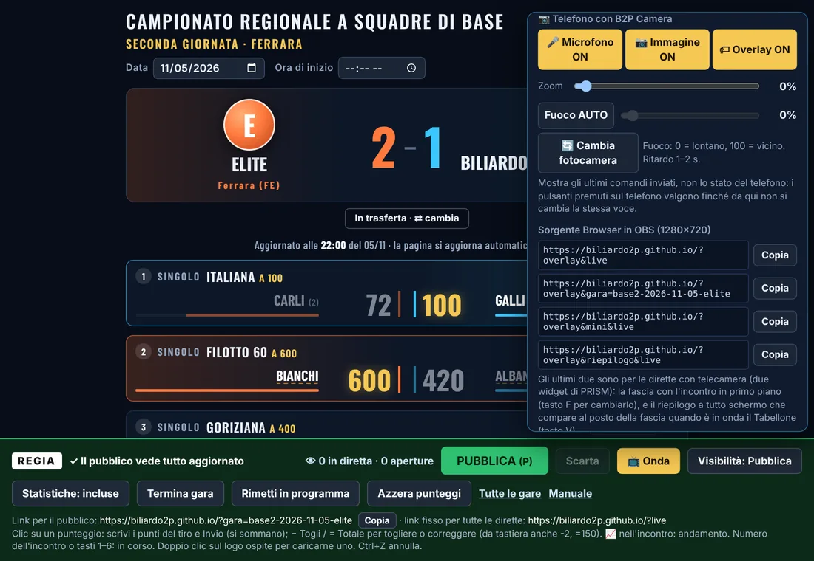
Preparare un PC personale (una volta sola):
- Installa OBS Studio (obsproject.com). Nella configurazione guidata scegli “Ottimizza per lo streaming”, servizio YouTube - RTMPS e Usa chiave di streaming.
- La chiave si copia da YouTube Studio del canale del circolo (in alto a destra deve esserci il logo del circolo): Crea → Trasmetti dal vivo → Streaming → Chiave di streaming → Copia. È una password: non va mostrata né condivisa.
- In OBS, Fonti → + → Dispositivo di cattura video (webcam o telefono collegato come webcam), poi Ctrl+F per adattarla allo schermo.
- Fonti → + → Browser, sopra la telecamera: indirizzo del mini-overlay, 1280 × 720.
- Nel Mixer audio spegni “Audio desktop” e lascia il microfono.
Prima della prima diretta vera conviene una prova su YouTube in “Non in elenco”. I punteggi si aggiornano dalla regia, anche da telefono, come sempre.
Prove
Per provare senza farsi vedere dal pubblico: crea una gara con visibilità Prova (sezione 4) e in OBS usa ?overlay&live&prova (segue la gara di prova in diretta) oppure il link della gara.
13Amministrazione
Come è fatta l'app
- Pagina: pubblicata con GitHub Pages dal repository
github.com/biliardo2p/biliardo2p.github.io(account del circolobiliardo2p). È divisa in più file, elencati sotto. Questo manuale è il filemanuale.htmldello stesso repository. - Dati: database Firebase Realtime Database del progetto
biliardo-2p. Contiene gare, elenco delle gare, cronologia dei punteggi, giocatori, circoli, squadre, foto dei giocatori, comandi dell'overlay (onda), spettatori collegati e contatori delle visite. - Accesso alla regia: utente di Firebase Authentication (email e password). Le regole del database permettono la scrittura solo a quell'utente, riconosciuto dal suo UID (il codice fisso dell'account, in Authentication → Users); tutti possono leggere. Gli unici dati che chiunque può scrivere sono i contatori degli spettatori e delle visite, che accettano solo numeri.
I file dell'app
| File | Contenuto |
|---|---|
index.html | Scheletro della pagina ed elenco dei file da caricare, nell'ordine giusto. |
img/logo.png | Logo del circolo (anche icona della pagina). |
img/icona-*.png, manifest.webmanifest, manifest-regia.webmanifest | Icone e descrizione dell'app installabile (pubblico e vecchia regia). |
regia/index.html, regia/manifest.webmanifest | App “solo regia”: ambito separato (/regia/), carica la regia della pagina principale a tutto schermo e ricorda l'ultima pagina di regia aperta. |
img/manuale/ | Immagini di questo manuale. |
css/base.css | Colori, caratteri, impaginazione, punteggio, schede degli incontri, animazioni. |
css/elenco-regia.css | Barra di regia, elenco delle gare, moduli e pulsanti. |
css/torneo.css | Tornei, tabellone di batterie e finali, finestre del torneo. |
css/set-andamento.css | Set, tastierino dei punti, grafico dell'andamento, regia su telefono. |
css/anagrafica.css | Anagrafica, suggerimenti dei nomi, controllo nomi, pagine dei giocatori. |
js/config.js | Collegamento a Firebase, indirizzo pubblico, logo e dati del circolo. |
js/formule.js | Incontri dei campionati a squadre (Base, Eccellenza) e tipi di torneo: è il file da toccare se cambia un regolamento. |
js/util.js | Funzioni di servizio, lettura dell'indirizzo, preparazione dei dati delle gare. |
js/gara.js | Regole di gioco: tabellone di batterie e finali, set, vincitori, totali. |
js/dati.js | Accesso della regia, scrittura nel database, PUBBLICA, cronologia. |
js/vista-gara.js | Disegno della pagina della gara e del tabellone. |
js/vista-elenco.js | Elenco delle gare. |
js/render.js | Schermata della regia (nuova gara, duplica, elimina) e aggiornamento della pagina. |
js/interazioni.js | Comandi: punteggi e tastierino, andamento, finestre dei tornei, logo. |
js/anagrafica.js | Giocatori, circoli, squadre, import ed export. |
js/nomi.js | Riconoscimento dei nomi nelle gare, categoria, suggerimenti. |
js/controllo-nomi.js | Controllo nomi. |
js/giocatori.js | Pagine pubbliche dei giocatori e statistiche. |
js/overlay.js, css/overlay.css | Overlay per OBS e pannello 📺 Onda della regia. |
js/regia-barra.js | Barra di regia e scorciatoie da tastiera. |
js/avvio.js | Partenza: sceglie quale pagina mostrare in base all'indirizzo. |
I file js/ condividono le stesse variabili e vanno caricati nell'ordine scritto in index.html. Nei collegamenti c'è un numero di versione (per esempio js/gara.js?v=20261104) che si cambia a ogni aggiornamento, così nessun dispositivo resta con file vecchi e nuovi mescolati.
Copia di lavoro
La copia di riferimento dei file sta anche nella cartella OBS\Live (insieme a regole_database.json e al file LEGGIMI con le note tecniche). Ogni modifica viene fatta lì e caricata su GitHub; il sito si aggiorna dopo un paio di minuti.
Regole del database
Il file regole_database.json contiene le regole complete. Per cambiarle: console di Firebase → Realtime Database → Regole → incolla il contenuto del file → Pubblica.
Copie di sicurezza
Dall'anagrafica, scheda Controllo nomi, ⬇ Copia di sicurezza scarica gare, giocatori, circoli, squadre e foto in un file. Conviene farla una volta al mese e dopo le giornate importanti. Dalla console di Firebase si può anche esportare l'intero database (Realtime Database → ⋮ → Esporta JSON).
Aggiungere un utente di regia
Si crea in Firebase → Authentication → Users (la registrazione libera è disattivata, quindi gli utenti si aggiungono solo da lì). Poi si copia il suo UID dalla colonna “User UID” e si aggiunge alle regole del database accanto a quello esistente, per esempio auth.uid === 'UID1' || auth.uid === 'UID2' in ogni riga .write.
Sicurezza: cose da sapere
- Chiave di Firebase visibile nel codice: è normale, non è una password. La protezione la fanno le regole del database.
- Registrazione di nuovi utenti: deve restare disattivata (Authentication → Settings → User actions → togliere “Enable create (sign-up)”).
- Regia su computer condivisi: l'accesso resta memorizzato; alla fine premi sempre Esci.
- Account Google del progetto Firebase: è la vera chiave di tutto: proteggilo con la verifica in due passaggi.
- Dati pubblici: anagrafica, foto e statistiche sono visibili a tutti; è bene che i soci ne siano informati.
- Limiti del piano gratuito: se si superassero i dati scaricabili nel mese il sito si fermerebbe fino al mese successivo, senza costi. Le foto sono rimpicciolite e si scaricano solo aprendo la pagina del giocatore.
14Problemi e domande
- Dopo un aggiornamento vedo ancora la versione vecchia.
- GitHub pubblica le modifiche dopo qualche minuto e il browser può tenere in memoria la pagina precedente. Ricarica con Ctrl+F5 (su telefono chiudi e riapri la scheda), oppure prova in una finestra in incognito.
- “Non riesco a leggere l'anagrafica”.
- Mancano i nodi
giocatori,circoliesquadrenelle regole del database, oppure le regole sono state pubblicate con la pagina già aperta. La pagina riprova da sola ogni 5 secondi; altrimenti ricarica. - “Pubblicazione rifiutata”.
- L'utente non è autorizzato dalle regole, oppure la sessione è scaduta: torna a Tutte le gare, premi Esci e rientra.
- Pannello Onda: “Comando non inviato: Firebase lo rifiuta. Aggiungi il nodo camera…”.
- Le regole del database pubblicate non hanno ancora il nodo
camera: incolla in Firebase il fileregole_database.jsonaggiornato e premi Pubblica (sezione Amministrazione). Se invece il telefono mostra “📡 Regia: non collegata”, controlla che abbia la rete. - Il pubblico non vede un punteggio che ho inserito.
- Controlla la barra di regia: se dice “Modifiche NON ancora pubblicate”, premi PUBBLICA.
- Un nome è sottolineato in arancione.
- Non è collegato a nessun giocatore dell'anagrafica: sceglilo dai suggerimenti, aggiungilo all'elenco o correggi la grafia. Non compare nelle statistiche finché non è collegato.
- Toccando un nome nella regia non si apre la scheda del giocatore.
- È voluto: in regia toccare un nome serve a modificarlo. I nomi sono link solo nelle pagine pubbliche.
- Ho creato una gara con la data o l'avversario sbagliato.
- Titolo, sottotitolo e nomi si correggono toccandoli in regia; data e ora di inizio con le caselle sotto il titolo, poi PUBBLICA. Il link della gara contiene ancora la data vecchia ma funziona lo stesso; se lo si vuole corretto, creare una nuova gara (anche con Duplica) ed eliminare quella sbagliata.
15Novità
9 novembre 2026
- Nuova app Android B2P Camera per le dirette dal telefono, con fascia e riepilogo del sito sopra il video, senza pubblicità né watermark.
- Pannello 📺 Onda: nuova sezione 📷 Telefono con B2P Camera per comandare il telefono dalla regia (microfono, immagine, overlay, zoom, fuoco, cambio fotocamera). Richiede il nodo
cameranelle regole del database.
8 novembre 2026
- Corretto: dopo aver cambiato data o ora di inizio in regia, il pulsante PUBBLICA restava arancione anche dopo la pubblicazione.
- Ora di inizio della gara: si indica in Nuova gara (facoltativa) e si corregge in regia sotto il titolo, insieme alla data. Il pubblico vede “Inizio: giovedì 12 novembre · ore 20:30” sotto il titolo della gara in programma e l'ora nell'elenco delle gare. L'overlay non cambia.
- Con la regia aperta lo schermo del telefono resta sempre acceso (anche nell'app Regia 2P), senza cambiare le impostazioni del telefono. Si spegne normalmente quando si passa a un'altra app.
- La fascia (overlay e mini-overlay) non alterna più da sola gli incontri in corso: resta sull'ultimo messo in corso e si cambia dalla regia con F. La rotazione automatica resta disponibile aggiungendo
&rotall'indirizzo. - Anagrafica: filtro per campionato nella scheda Squadre; logo e foto si possono incollare da un'immagine copiata (Ctrl+V o 📋 Incolla).
- Una squadra può schierare anche giocatori iscritti ad altri circoli: si aggiungono dalla scheda della squadra o da quella del giocatore.
- Circoli e squadre separati: il giocatore ha un circolo (che rappresenta nelle gare singole e a coppie) e, se li gioca, una o più squadre dei campionati, che possono avere il nome di uno sponsor. Nuove schede Circoli e Squadre in anagrafica, scelta della nostra squadra in Nuova gara, colonne Circolo e Squadre nell'import. Il primo passo è il pulsante “Separa circoli e squadre” in anagrafica.
- Nuova app Regia 2P “solo regia”, da installare da
biliardo2p.github.io/regia/: resta sempre in regia anche se si aprono pagine pubbliche in Chrome, e alla riapertura riprende l'ultima gara. La vecchia va disinstallata.
7 novembre 2026
- Dirette con telecamera: nuovo riepilogo della gara a tutto schermo (
?overlay&riepilogo&live, secondo widget di PRISM). Dal pannello 📺 Onda il tasto V alterna riepilogo e fascia del mini-overlay. - Mini-overlay più basso e compatto (meno spazio vuoto intorno ai punti), per le dirette dal telefono con PRISM Live.
- Mini-overlay: con
&alzanell'indirizzo la fascia si solleva dal fondo, sopra il logo di PRISM. - Mini-overlay: si adatta a qualsiasi forma del riquadro (widget di PRISM a tutto schermo o a striscia), con la fascia sempre a tutta larghezza e in basso.
- Fascia dell'incontro (overlay e mini-overlay): nei tornei e nelle partite singole non compare più la squadra dei giocatori, solo nei campionati a squadre.
6 novembre 2026
- Tornei: il riquadro 🏆 Vincitore compare solo per il turno “Finale” (non più per “Quarti di finale”, “Ottavi di finale” ecc.) e mostra nome e cognome per esteso dei giocatori dell'anagrafica.
- Home: riquadro “Partite in corso” con il pulsante Guarda la diretta quando ci sono gare in diretta.
- Scheda del giocatore: “+ Nuova squadra…” per creare la squadra insieme al giocatore.
- Mini-overlay per le dirette con telecamera (
?overlay&mini&live): solo la fascia in basso, con gli incontri in corso a rotazione. - Nella fascia dell'incontro le coppie hanno un nome per riga.
5 novembre 2026
- Nuove categorie Nazionale (N) e Nazionale Pro (NP); negli elenchi e nelle pagine dei giocatori la categoria si legge “2ª cat.”, “cat. Master”.
- Foto dei giocatori: si caricano dalla scheda dell'anagrafica e compaiono nella pagina pubblica del giocatore.
- Regole del database più sicure (accesso alla regia legato all'UID dell'utente) e nuova sezione “Sicurezza” nel capitolo Amministrazione.
4 novembre 2026
- Overlay per le dirette video in OBS dallo stesso sito (
?overlay&live), con categoria accanto ai nomi e pannello 📺 Onda nella regia. - Numero del biliardo per gli incontri in corso, sul sito e nell'overlay.
- Partite singole: per seguire uno o pochi incontri di un torneo senza tabellone.
- Visibilità delle gare: Pubblica, Solo con il link, Prova; possibilità di escludere una gara dalle statistiche.
- Si può installare il sito come app sul telefono (icone “Live 2P” e “Regia 2P”). Facoltativo: il link resta quello di sempre.
- Il manuale ha le immagini delle schermate principali.
- L'app è divisa in più file (grafica, regole di gioco, regia, anagrafica…) per rendere più sicure le modifiche future. Per chi la usa non cambia nulla.
3 novembre 2026
- Nuovo indirizzo: biliardo2p.github.io, sull'account GitHub del circolo. I vecchi link portano al nuovo indirizzo.
- Schede pubbliche dei giocatori con statistiche e cronologia; nomi cliccabili nelle pagine delle gare.
- Controllo nomi: collegamento all'anagrafica dei nomi delle gare già giocate.
- Questo manuale.
2 novembre 2026
- Anagrafica di giocatori e squadre, con categorie per anno sportivo e import da Excel.
- Suggerimenti dei giocatori nelle caselle della regia e categoria accanto ai nomi.
- Squadra avversaria scelta dall'elenco, con città e logo automatici.
Fine ottobre 2026
- Casa e trasferta: a sinistra sempre la squadra di casa.
- Pulsanti Duplica ed Elimina nell'elenco delle gare della regia.
- Tornei con batterie, finali e partite dell'acqua; formule a più set con specialità all'acchito.
- Grafico dell'andamento, animazione dei punteggi, link fisso
?live.